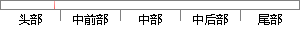

软件中断 SWI 6 管理模式 0x00000008
片段位置图

相似结果
相似片段：软件中断 SWI 0x00000008 6 管理模式 这是一个由用户定义的中断指令。可用于用户模式下的程序调用特权操作。 指令预取中止 Prefech Abort 0x0000000C 5 中止模式 ...
| 标题 | 《基于嵌入式LINUX下软键盘的设计》 |
| 对比库 | 中国学位论文全文数据库 |
| 作者 | 范世琦 |
| 机构 | 河北工业大学 |
| 分类 | 计算机应用技术 |
| 年份 | 2006 |
| 相似率 | 85.71% （严重抄袭） |
※ 片段修改建议 ※
近似词参考：- 中断：间断 中止 停止
系统自动生成语句：软件间断 SWI 6 管理模式 0x00000008
注：本片段修改建议为系统自动生成，仅供参考。